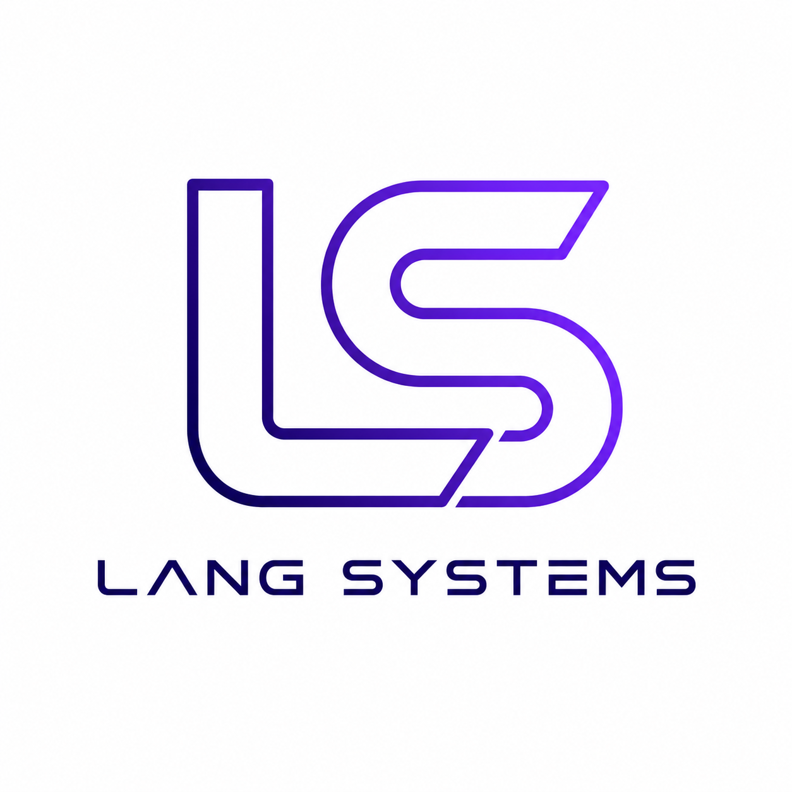

Custom Software
Bespoke web, desktop, and internal applications shaped around the way your business actually works.

Application engineering for practical business systems
Bring us the application idea, workflow challenge, or system gap. We shape the product, engineer the solution, and build software ready for real business use.
What we do
Lang Systems is the umbrella company for a growing portfolio of software applications, tools, and integration projects. We focus on useful systems first: clean workflows, reliable data, practical automation, and interfaces that make daily work easier.
The company is being built around a simple promise: take real operational problems, shape them into clear software ideas, then engineer them through design, build, testing, deployment, and ongoing improvement.
Services
Bespoke web, desktop, and internal applications shaped around the way your business actually works.
Connect databases, payment flows, reporting tools, operational systems, and external services into one more reliable workflow.
Reduce manual handling, repeated admin, and fragile handoffs with practical automation that fits the team using it.
Help with testing, packaging, deployment, data handling, documentation, and the final details needed to move from prototype to release.
Approach
Define the workflow, users, constraints, integrations, and what success looks like.
Turn the idea into a clean user experience, practical scope, and build plan.
Develop the application, connect the required systems, and refine with real usage.
Package, test, document, deploy, and leave room for the next improvement cycle.
Software portfolio
Point-of-sale software for business operations, with room for payments, reporting, local data, and future service integrations.
Reserved space for the next product, client project, or internal tool as the software portfolio grows.
Contact
Lang Systems is preparing the official domain and email setup. Until those details are finalised, this section is ready for your preferred contact method.